수산물품질관리사-1차 (2015-11-07 기출문제)
1과목: 수산물품질관리 관련법령
1. 농수산물 품질관리법령상 생산자단체 중 「농어업경영체 육성 및 지원에 관한 법률」에 따른 생산자 단체로만 구성된 것은?
- 수산업협동조합, 어업공제조합
- 수산업협동조합, 영어조합법인
- 어업회사법인, 영어조합법인
- 어업공제조합, 영어조합법인
(정답률: 80%)

2. 농수산물 품질관리법령상 농수산물품질관리심의회의 심의사항이 아닌 것은?
- 지리적표시에 관한 사항
- 수산물우수관리인증에 관한 사항
- 수산물의 위해요소중점관리기준에 관한 사항
- 수산물품질인증에 관한 사항
(정답률: 42%)
3. 농수산물 품질관리법령상 품질인증기관으로 지정받은 수산물 생산자단체(어업인 단체) 등에 대하여 자금을 지원할 수 있는 자로 규정되어 있지 않은 것은?
- 해양수산부장관
- 특별자치도지사
- 군수
- 수산업협동조합중앙회장
(정답률: 64%)
4. 농수산물 품질관리법령상 지정해역으로 지정하기 위한 해역이 위생관리기준에 맞는지 조사ㆍ점검하는 권한을 해양수산부장관으로부터 위임받은 자는?
- 국립수산과학원장
- 국립수산물품질관리원장
- 국립해양조사원장
- 지방해양수산청장
(정답률: 알수없음)
5. 농수산물 품질관리법령상 위해요소중점관리기준을 이행하는 시설로 등록된 생산ㆍ가공시설에서 위해요소중점관리기준을 불성실하게 이행하는 경우로서 2차 위반 시의 행정처분 기준은?
- 시정명령
- 생산ㆍ가공ㆍ출하ㆍ운반의 제한ㆍ중지 명령
- 영업정지 1개월
- 등록취소
(정답률: 37%)
6. 농수산물 품질관리법령상 수산물 및 수산가공품에 대하여 관능검사를 실시할 경우, 포장 제품 500개에 대한 추출 개수와 채점 개수는?
- 추출 개수 5개, 채점 개수 2개
- 추출 개수 9개, 채점 개수 2개
- 추출 개수 11개, 채점 개수 3개
- 추출 개수 13개, 채점 개수 4개
(정답률: 10%)
7. 농수산물 품질관리법령상 정부 비축용 및 국내 소비용 수산물에 사용하는 검사 표시의 구분으로 옳지 않은 것은?
- 등급증인
- 합격증인
- 검인
- 봉인
(정답률: 알수없음)
8. 농수산물 품질관리법령상 수산물품질관리사의 직무로 옳은 것을 모두 고른 것은?
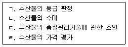
- ㄱ, ㄷ
- ㄴ, ㄹ
- ㄱ, ㄷ, ㄹ
- ㄴ, ㄷ, ㄹ
(정답률: 90%)
9. 농수산물 품질관리법령상 수산물 안전성조사에 관한 설명으로 옳은 것은?
- 생산단계 수산물은 해양수산부령으로 정하는 안전기준에의 적합여부를 조사하여야 한다.
- 저장단계 및 출하되어 거래되기 이전 단계 수산물은 「식품위생법」 등 관계 법령에 따른 잔류 허용기준 등의 초과 여부를 조사하여야 한다.
- 해양수산부장관은 생산단계 안전기준을 정할 때에는 관계 중앙행정기관의 장과 협의하여야 한다.
- 시ㆍ도지사가 안전성조사를 위하여 관계 공무원에게 시료 수거 및 조사 등을 하게 할 경우, 무상으로 시료 수거를 하게 할 수 없다.
(정답률: 64%)
10. 농수산물 품질관리법령상 포장하지 아니하고 판매하거나 낱개로 판매하는 지리적표시품에 지리적 표시를 할 수 있는 방법으로 옳지 않은 것은?
- 푯말
- 스티커
- 꼬리표
- 표지판
(정답률: 39%)
11. 농수산물 유통 및 가격안정에 관한 법령상 도매시장법인ㆍ시장도매인 또는 공판장 개설자가 사용하는 표준정산서에 포함되어야 하는 사항이 아닌 것은?
- 출하자명과 출하자 주소
- 공제 명세 및 공제금액 총액
- 경매사 성명
- 판매 명세, 판매대금총액 및 매수인
(정답률: 55%)
12. 농수산물 유통 및 가격안정에 관한 법령상 수산물공판장을 개설할 수 있는 자로 규정되어 있지 않은 것은?
- 어업회사법인
- 한국농수산식품유통공사
- 수산업협동조합중앙회
- 광역시
(정답률: 30%)
13. 농수산물 유통 및 가격안정에 관한 법령상 산지유통인에 관한 설명으로 옳은 것을 모두 고른 것은?
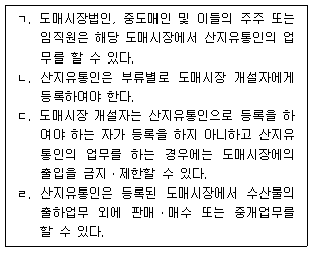
- ㄱ, ㄴ
- ㄱ, ㄹ
- ㄴ, ㄷ
- ㄷ, ㄹ
(정답률: 46%)
14. 농수산물 유통 및 가격안정에 관한 법령상 경매사에 관한 설명으로 옳지 않은 것은?
- 도매시장법인이 확보하여야 하는 경매사의 수는 2명 이상으로 하되, 도매시장법인별 연간 거래물량 등을 고려하여 업무규정으로 그 수를 정한다.
- 민영도매시장의 경매사는 민영도매시장의 개설자가 임면한다.
- 도매시장법인이 경매사를 임면한 경우에는 임면한 날부터 15일 이내에 도매시장 개설자에게 신고하여야 한다.
- 도매시장의 시장도매인은 해당 도매시장의 경매사로 임명될 수 있다.
(정답률: 46%)
15. 농수산물 유통 및 가격안정에 관한 법령상 민영도매시장에 관한 설명으로 옳지 않은 것은? (본 문제에서 “시ㆍ도지사”라 함은 특별시장ㆍ광역시장ㆍ특별자치시장ㆍ도지사 또는 특별자치도지사를 말한다.)
- 민간인등이 특별시ㆍ광역시ㆍ특별자치시ㆍ특별자치도 또는 시 지역에 민영도매시장을 개설하려면시ㆍ도지사의 허가를 받아야 한다.
- 민영도매시장의 중도매인은 민영도매시장의 개설자가 지정한다.
- 민영도매시장의 시장도매인은 시ㆍ도지사가 지정한다.
- 민영도매시장의 개설자는 중도매인, 매매참가인, 산지유통인 및 경매사를 두어 민영도매시장을 직접 운영할 수 있다.
(정답률: 60%)
16. 농수산물 유통 및 가격안정에 관한 법령상 도매시장에 관한 설명으로 옳은 것은?
- 도매시장의 개설자는 해당 도매시장의 상인으로 구성된 도매시장 관리사무소를 둘 수 있다.
- 중앙도매시장의 개설자는 청과부류와 수산부류에 대하여 도매시장법인을 두어야 한다.
- 도매시장법인이 다른 도매시장법인을 인수하거나 합병하는 경우에는 해양수산부장관의 승인을 받아야 한다.
- 도매시장에서 매매참가인의 업무를 하려는 자는 도매시장법인에게 매매참가인으로 신고하여야 한다.
(정답률: 알수없음)
17. 농수산물의 원산지 표시에 관한 법률의 제정 목적이다. 다음 ( )안에 들어갈 내용이 옳게 짝지어진 것은?
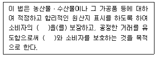
- 알권리 - 생산자
- 알권리 - 판매자
- 선택권 - 생산자
- 선택권 - 판매자
(정답률: 50%)
18. 농수산물의 원산지 표시에 관한 법률 시행령 별표 1 ‘원산지의 표시기준’의 내용 중 일부이다. 다음 ( )안에 공통으로 들어갈 내용은?
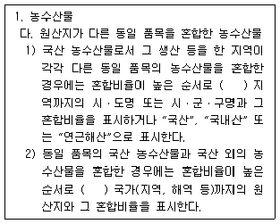
- 2개
- 3개
- 4개
- 5개
(정답률: 28%)
19. 농수산물의 원산지 표시에 관한 법령상 수산물의 원산지 표시와 관련된 정보 중 국민이 알아야 할 필요가 있다고 인정되는 정보의 제공에 관한 설명으로 옳지 않은 것은?
- 해양수산부장관은 방사성물질이 유출된 국가 또는 지역 등의 정보에 대하여는 「공공기관의 정보 공개에 관한 법률」에서 허용하는 범위에서 이를 국민에게 제공하도록 노력하여야 한다.
- 해양수산부장관이 정보를 제공하는 경우에는 농수산물품질관리심의회의 심의를 거칠 수 있다.
- 해양수산부장관은 국민에게 정보를 제공하고자 하는 경우 「농수산물 품질관리법」에 따른 농수산물안전정보시스템을 이용할 수 있다.
- 해양수산부장관은 국민에게 정보를 제공하고자 하는 경우 공청회를 거쳐야 한다.
(정답률: 59%)
20. 농수산물의 원산지 표시에 관한 법령상 과징금에 관한 내용이다. 다음 ( )안에 들어갈 숫자는?
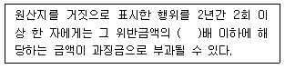
- 5
- 10
- 15
- 20
(정답률: 28%)
21. 농수산물의 원산지 표시에 관한 법령상 찌개용, 구이용, 탕용으로 수산물을 조리하여 판매ㆍ제공하는 일반음식점에서 원산지를 표시하지 않아도 되는 것은?
- 미꾸라지
- 조기
- 뱀장어
- 낙지
(정답률: 55%)
22. 농수산물의 원산지 표시에 관한 법령상 다음 ( )안에 들어갈 내용이 옳게 짝지어진 것은?
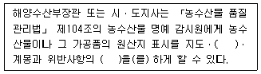
- 홍보 - 신고
- 홍보 - 단속
- 교육 - 신고
- 교육 - 단속
(정답률: 17%)
23. 친환경농어업 육성 및 유기식품 등의 관리ㆍ지원에 관한 법령상 친환경어업 육성계획에 포함되어야하는 사항을 모두 고른 것은?
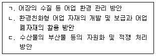
- ㄱ, ㄴ
- ㄱ, ㄷ
- ㄴ, ㄷ
- ㄱ, ㄴ, ㄷ
(정답률: 80%)
24. 친환경농어업 육성 및 유기식품 등의 관리ㆍ지원에 관한 법령상 국립수산물품질관리원장이 인증기관을 지정하였을 때 국립수산물품질관리원의 인터넷 홈페이지에 게시하여야 할 사항이 아닌 것은?
- 인증기관의 명칭 및 주요 장비
- 주된 사무소 및 지방사무소의 소재지
- 인증업무의 범위 및 인증업무규정
- 인증기관의 지정번호 및 지정일
(정답률: 19%)
25. 해양수산부 소관 친환경농어업 육성 및 유기식품 등의 관리ㆍ지원에 관한 법률 시행규칙의 용어정의이다. 다음 ( )안에 공통으로 들어갈 내용으로 옳은 것은?
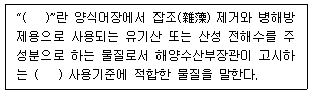
- 항생처리제
- 차아염소산나트륨처리제
- 활성처리제
- 오존처리제
(정답률: 60%)
2과목: 수산물유통론
26. 수산물 유통의 특성에 관한 설명으로 옳은 것은?
- 품질관리가 쉽다.
- 가격변동성이 크다.
- 규격화 및 균질화가 쉽다.
- 유통경로가 단순하다.
(정답률: 64%)
27. 수산물의 직접적 유통 및 유통기구에 관한 설명으로 옳지 않은 것은?
- 수산업협동조합의 전문 중매인을 경유한다.
- 생산자와 소비자 사이에 직접적으로 이루어지는 것을 말한다.
- 수산물 생산자는 생산 및 판매활동의 주체이다.
- 수산물 유통에는 수산물과 화폐의 교환이 일어난다.
(정답률: 50%)
28. 수산물 유통에 있어서 물적 활동으로 옳지 않은 것은?
- 운송 활동
- 보관 활동
- 금융 활동
- 정보 활동
(정답률: 알수없음)
29. 생산자가 출어자금을 차입하여 어획한 후 차입자에게 어획물의 판매권을 양도하는 유통경로는?
- 생산자 → 산지 위판장 → 소비자
- 생산자 → 객주 → 소비자
- 생산자 → 수집상 → 도매인 → 소비자
- 생산자 → 수협 → 중간도매상 → 소비자
(정답률: 50%)
30. 수산물 산지시장의 기능으로 옳지 않은 것은?
- 양륙 및 진열의 기능
- 거래형성의 기능
- 대금결제의 기능
- 생산 및 어획의 기능
(정답률: 알수없음)
31. 수산물 계통출하의 주된 유통기구는?
- 객주
- 유사도매시장
- 인터넷 전자상거래
- 수협 위판장
(정답률: 64%)
32. 수산물 도매시장의 유통주체가 아닌 것은?
- 도매시장법인
- 시장도매인
- 도매물류센터
- 중도매인
(정답률: 59%)
33. 수산물 도매시장의 중도매인 기능으로 옳지 않은 것은?
- 보관 및 포장 기능
- 금융 기능
- 가공 기능
- 수집 및 출하 기능
(정답률: 25%)
34. 수산물 유통경로 중 산지 직판장 거래에 관한 설명으로 옳은 것은?
- 선도유지가 어렵다.
- 중간 유통비용이 적게 든다.
- 저렴한 가격으로 판매가 어렵다.
- 소비자가 수송, 보관 등을 담당한다.
(정답률: 알수없음)
35. 선어의 유통에 관한 설명으로 옳지 않은 것은?
- 일반적으로 비계통출하 보다 계통출하 비중이 높다.
- 빙수장이나 빙장 등이 필요하다.
- 고등어는 갈치의 유통경로와 매우 유사하다.
- 선어는 원양에서 어획된 것이 대부분이다.
(정답률: 40%)
36. 냉동수산물에 관한 설명으로 옳지 않은 것은?
- 냉동수산물의 유통경로는 단순하다.
- 냉동수산물의 운송은 주로 냉동탑차에 의해 이루어진다.
- 냉동수산물은 대부분 수협 위판장을 거치지 않는다.
- 냉동수산물은 동결 상태로 유통된다.
(정답률: 37%)
37. 현재 우리나라에서 생산되는 양식 어종 중 유통량이 가장 많은 것은?
- 도다리
- 조피볼락
- 넙치
- 참돔
(정답률: 54%)
38. 활어의 유통에 관한 설명으로 옳지 않은 것은?
- 일반적으로 계통출하 보다 비계통출하의 비중이 높다.
- 산지유통과 소비지유통으로 구분된다.
- 공영도매시장에서 주로 이루어지고 있다.
- 다른 수산물에 비해 차별적인 유통기술이 필요하다.
(정답률: 37%)
39. 저온상태를 유지하면서 수산물을 유통하는 방식은?
- 수산물유통이력제
- 콜드 체인
- 쿼터제
- 짓가림제
(정답률: 64%)
40. 수산물 공동판매에 속하지 않는 것은?
- 공동수송
- 공동생산
- 공동선별
- 공동계산
(정답률: 50%)
41. 수산물 공동판매의 기능으로 옳지 않은 것은?
- 어획물 가공
- 출하 조정
- 유통비용 절감
- 어획물 가격제고
(정답률: 50%)
42. 생산자 측면에서 수산물 전자상거래의 장애요인을 모두 고른 것은?
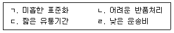
- ㄱ, ㄷ
- ㄴ, ㄷ
- ㄱ, ㄴ, ㄷ
- ㄱ, ㄴ, ㄷ, ㄹ
(정답률: 46%)
43. 전어가격이 마리당 200원에서 300원으로 오르자 판매량이 600 마리에서 400 마리로 줄었다. 수요의 가격탄력성은?
- -1
- -1/2
- -2/3
- -3/4
(정답률: 20%)
44. 수산물 공급곡선이 우상향하는 양(＋)의 기울기를 갖는 이유로 옳지 않은 것은?
- 가격 상승
- 공급량 증가
- 보관비 및 운송비 상승
- 수요자의 기호도 변화
(정답률: 20%)
45. 아래는 오징어를 판매한 가격을 나타낸 것이다. 소매상의 마진율(%)은?
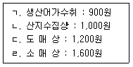
- 10
- 15
- 20
- 25
(정답률: 알수없음)
46. 수산물 마케팅 믹스 4P와 4C의 전략을 바르게 연결한 것은?
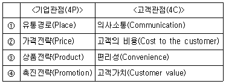
- ①
- ②
- ③
- ④
(정답률: 70%)
47. 수산물 유통 시 포장에 관한 설명으로 옳은 것을 모두 고른 것은?
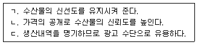
- ㄴ
- ㄱ, ㄷ
- ㄴ, ㄷ
- ㄱ, ㄴ, ㄷ
(정답률: 42%)
48. 수산물 가격결정에 있어 사전에 구매자와 판매자가 서로 협의하여 가격을 결정하는 방식은?
- 정가매매
- 수의매매
- 낙찰경매
- 서면입찰
(정답률: 50%)
49. 수산물 유통정책의 목적으로 옳지 않은 것은?
- 유통효율의 극대화
- 수산자원 조성
- 가격안정
- 식품안전성 확보
(정답률: 알수없음)
50. 수산물 국제교역에 있어 특정 국가(지역) 간 배타적인 무역특혜를 상호 부여하는 협정은?
- DDA
- WTO
- FTA
- WHO
(정답률: 50%)
3과목: 수확후 품질관리론
51. 콜라겐 추출을 위해 사용되는 원료는?
- 상어 껍질
- 굴 패각
- 미역 포자엽
- 새우 껍질
(정답률: 50%)
52. 수산물을 삶아서 건조한 제품은?
- 굴비
- 마른김
- 마른멸치
- 간고등어
(정답률: 54%)
53. 고등어 염장 시 소금의 침투속도에 관한 설명으로 옳지 않은 것은?
- 염장온도가 높을수록 빠르다.
- 지방 함량이 적을수록 빠르다.
- 소금의 사용량이 많을수록 빠르다.
- 소금에 칼슘염이 많을수록 빠르다.
(정답률: 알수없음)
54. 연육(Surimi) 제조를 위한 기계가 아닌 것은?
- 레토르트(Retort)
- 리파이너(Refiner)
- 사일런트 커터(Silent cutter)
- 스크루 압착기(Screw press)
(정답률: 60%)
55. 급속동결과 완만동결의 특성에 관한 설명으로 옳은 것은?
- 조직손상은 완만동결보다 급속동결이 심하다.
- 빙결정의 수는 완만동결보다 급속동결이 많다.
- 빙결정의 크기는 완만동결보다 급속동결이 크다.
- 빙결정의 크기와 수는 완만동결과 급속동결에 따른 차이가 없다.
(정답률: 50%)
56. 염장 어류에 곡류와 향신료 등의 부원료를 사용하여 숙성 발효시킨 제품은?
- 멸치젓
- 까나리액젓
- 명란젓
- 가자미식해
(정답률: 60%)
57. 통조림의 진공도를 측정한 결과 진공도가 20 cmHg이라면 진진공도(cmHg)는? (단, 통조림의 상부 공간(headspace) 내용적은 6.0 mL이고, 진공계침(버돈관)의 내용적은 1.2 mL이다.)
- 22.0
- 24.0
- 26.0
- 28.0
(정답률: 알수없음)
58. 수산물을 냉각된 금속판 사이에서 동결시키는 장치는?
- 송풍동결장치
- 침지식동결장치
- 접촉식동결장치
- 액화가스동결장치
(정답률: 60%)
59. 한천의 제조 원료는?
- 우뭇가사리
- 모자반
- 톳
- 김
(정답률: 75%)
60. 수산물의 품질관리를 위한 관능적 요소가 아닌 것은?
- 색
- 맛
- 냄새
- 세균수
(정답률: 69%)
61. 수산물에서 발생되는 바이러스성 식중독의 특징으로 옳지 않은 것은?
- 감염 후 장기간 면역이 생성되어 재감염되지 않는다.
- 약제에 대한 내성이 강하여 제어가 곤란하다.
- 사람과 일부 영장류의 장내에서 증식하는 특징이 있다.
- 소량으로도 감염되며 발병율도 높다.
(정답률: 70%)
62. 수산물과 독소성분의 연결이 옳지 않은 것은?
- 모시조개 : venerupin
- 독꼬치 : ciguatoxin
- 개조개 : saxitoxin
- 진주담치 : tetrodotoxin
(정답률: 70%)
63. 한국의 식품공전에서 수산물 중금속 관리기준이 설정되어 있지 않은 것은?
- 납
- 비소
- 카드뮴
- 수은
(정답률: 50%)
64. 위해요소중점관리(HACCP)의 7원칙 중 식품의 위해를 사전에 방지하고 안전성을 확보할 수 있는 단계는?
- 기록관리
- 시정조치 설정
- 검증방법 설정
- 중요관리점 설정
(정답률: 67%)
65. 송어양식장 위해요소중점관리(HACCP)의 선행요건 중 위생관리 항목으로 옳은 것을 모두 고른 것은?
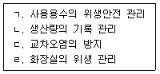
- ㄱ, ㄴ
- ㄱ, ㄴ, ㄷ
- ㄱ, ㄷ, ㄹ
- ㄱ, ㄴ, ㄷ, ㄹ
(정답률: 70%)
66. 수산물 식중독균에 관한 설명으로 옳지 않은 것은?
- Camphylobacter jejuni 는 멸치내장에 존재한다.
- Listeria monocytogenes 는 냉장온도에서도 증식할 수 있다.
- Vibrio vulnificus 는 패혈증을 일으키는 병원균으로 어패류 등에서 발견된다.
- Vibrio parahaemolyticus 는 해수 또는 기수에 서식하는 호염성 세균이다.
(정답률: 28%)
67. 0℃의 물 1톤을 하루 동안 0℃의 얼음으로 동결하고자 할 때 시간당 제거해야 할 열량(kcal/hr)은? (단, 얼음의 융해잠열은 79.68 kcal/kg이며, 기타 조건은 고려하지 않음)
- 33.20
- 79.68
- 3,320
- 79,680
(정답률: 알수없음)
68. 다음과 같은 특징을 갖고 있는 기생충은?
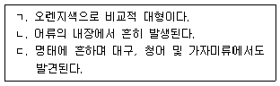
- 광절열두조충
- 고래회충
- 구두충
- 간흡충
(정답률: 28%)
69. 수산물 포장에 관한 설명으로 옳지 않은 것은?
- 제품의 수송 및 취급 중 손상되기 쉽다.
- 내용물에 대한 정보를 소비자에게 제공한다.
- 유해물질의 혼입을 차단해 준다.
- 제품의 취급이 간편하여 편의성을 제공한다.
(정답률: 73%)
70. 종이류 포장재료의 일반적 특징으로 옳지 않은 것은?
- 접착 가공이 용이하고 개봉이 쉽다.
- 재활용 또는 폐기물처리가 어렵다.
- 원료를 쉽게 구할 수 있고 가격이 저렴하다.
- 가볍고 적당한 강직성이 있어 기계적으로 가공하기 쉽다.
(정답률: 30%)
71. ATP (Adenosine triphosphate) 분해 생성물을 지표로 하여 어류의 신선도를 측정하는 방법은?
- K값 측정법
- 인돌 측정법
- 아미노질소 측정법
- 휘발성염기질소 측정법
(정답률: 28%)
72. 어류의 사후변화 과정을 순서대로 나열한 것은?
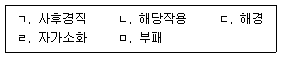
- ㄱ - ㄷ- ㄹ - ㄴ - ㅁ
- ㄴ - ㄱ - ㄷ - ㄹ - ㅁ
- ㄷ - ㄹ - ㄴ - ㄱ - ㅁ
- ㄹ - ㄴ - ㄱ - ㄷ - ㅁ
(정답률: 알수없음)
73. 수산가공 원료의 일반적인 특성이 아닌 것은?
- 어획시기의 한정성
- 어획장소의 한정성
- 생산량의 계획성
- 어종의 다양성
(정답률: 60%)
74. 기계적으로 -1∼2 ℃ 정도로 만든 바닷물에 어패류를 침지시키는 저온 저장 방법은?
- 쇄빙법
- 수빙법
- 냉각 해수법
- 드라이 아이스법
(정답률: 50%)
75. 선상에서의 어획물 선별 및 상자담기에 관한 설명으로 옳지 않은 것은?
- 신속히 처리한다.
- 어획물에 상처가 나지 않도록 주의하여야 한다.
- 상자당 어종별 크기별로 구분해서 담는다.
- 어종에 관계없이 등을 위로 향하는 배립형으로 담는다.
(정답률: 73%)
4과목: 수산일반
76. 수산업법에서 정의하고 있는 수산업은?
- 어업, 양식어업, 조선업
- 어업, 어획물운반업, 수산물가공업
- 양식어업, 해운업, 원양어업
- 수산물가공업, 연안여객선업, 내수면어업
(정답률: 62%)
77. 우리나라 최근 3년(2012 ~ 2014)간 정부 수산통계에서 국내 총 수산물 생산량이 가장 많은 어업으로 옳은 것은?
- 양식어업
- 원양어업
- 연근해어업
- 내수면어업
(정답률: 50%)
78. 우리나라 수산업의 지속적인 발전을 위한 내용으로 옳지 않은 것은?
- 수산물의 안정적 공급
- 외국과의 어업 협력 강화
- 연근해의 어선 세력 확대
- 수산자원의 조성
(정답률: 알수없음)
79. 우리나라에서 어선의 크기를 표시하는 단위로 옳은 것은?
- 마력
- 해리
- 톤
- 마일
(정답률: 60%)
80. 수산업법상 수산업 관리제도와 유효기간의 설명으로 옳은 것을 모두 고른 것은?
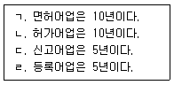
- ㄱ, ㄴ
- ㄱ, ㄷ
- ㄴ, ㄹ
- ㄷ, ㄹ
(정답률: 70%)
81. 우리나라에서 멸치를 가장 많이 어획하는 어업의 명칭은?
- 대형선망어업
- 기선권현망어업
- 잠수기어업
- 근해채낚기어업
(정답률: 46%)
82. 다랑어류의 자원관리를 위한 지역수산관리기구로 옳은 것은?
- 국제해사기구(IMO)
- 국제포경위원회(IWC)
- 남극해양생물자원보존위원회(CCAMLR)
- 중서부태평양수산위원회(WCPFC)
(정답률: 알수없음)
83. 총허용어획량(Total allowable catch)제도에 관한 내용으로 옳지 않은 것은?
- 수산자원관리의 운영체계
- 과학적인 수산자원 평가
- 어업이 개시되기 전에 어획가능량 설정
- 어선어업의 경쟁적 조업 유도
(정답률: 60%)
84. 수산업법상 면허어업이 아닌 것은?
- 어류등양식어업
- 해조류양식어업
- 패류양식어업
- 육상해수양식어업
(정답률: 64%)
85. 다음의 해조류 중 갈조류가 아닌 것은?
- 김
- 모자반
- 미역
- 다시마
(정답률: 64%)
86. 해조류의 양식방법이 아닌 것은?
- 말목식
- 부류식
- 밧줄식
- 순환여과식
(정답률: 알수없음)
87. 어류양식에서 발병하는 세균성 질병이 아닌 것은?
- 림포시스티스(Lymphocystis)병
- 아에로모나스(Aeromonas)병
- 에드워드(Edward)병
- 비브리오(Vibrio)병
(정답률: 55%)
88. 활어 운반과정에서 고려해야 할 기본적인 사항으로 옳지 않은 것은?
- 운반용수의 저온유지 및 조절
- 사료의 충분한 공급
- 산소의 적정한 보충
- 오물의 적기 제거
(정답률: 70%)
89. 미역양식에서 가이식(假移植)을 하는 주된 목적으로 옳은 것은?
- 유엽체의 성장 촉진
- 유주자의 방출 촉진
- 아포체의 성장 촉진
- 배우체의 발아 성장 촉진
(정답률: 40%)
90. 올챙이 모양(尾蟲形)의 유생으로 부화하여 유영생활 후 부착하는 품종으로 옳은 것은?
- 전복
- 가리비
- 우렁쉥이(멍게)
- 굴
(정답률: 62%)
91. 다음 조건에서의 사료계수는?
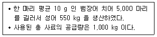
- 1
- 2
- 3
- 5
(정답률: 알수없음)
92. 우리나라에서 현재 완전양식으로 생산되는 어종이 아닌 것은?
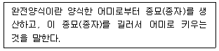
- 넙치(광어)
- 조피볼락(우럭)
- 무지개송어
- 뱀장어
(정답률: 60%)
93. 고등어의 연령을 파악하기 위해 이용되는 것으로 옳은 것은?
- 이석(耳石)
- 부레
- 측선(側線)
- 아가미
(정답률: 50%)
94. 연골어류가 아닌 것은?
- 두툽상어
- 쥐가오리
- 참다랑어
- 홍어
(정답률: 64%)
95. 수산생물의 서식에 영향을 미치는 환경요인 중 물리적 요인이 아닌 것은?
- 수온
- 해수유동
- 광선
- 먹이생물
(정답률: 73%)
96. 어구를 고정하고 조류의 힘에 의해 해저 가까이에 있는 어군을 어획하는 어업은?
- 근해안강망어업
- 기선선망어업
- 근해트롤어업
- 근해채낚기어업
(정답률: 19%)
97. 어로 과정에서 밝은 불빛(집어등)을 이용하여 어획하는 어종으로 옳은 것은?
- 명태
- 오징어
- 대게
- 대구
(정답률: 64%)
98. 우리나라의 연안에서 서식하는 전복류 중 난류종(계)이 아닌 것은?
- 참전복
- 오분자기
- 말전복
- 시볼트전복
(정답률: 64%)
99. 수산자원의 계군을 식별하는 방법 중 회유경로를 추적할 수 있는 조사 방법으로 옳은 것은?
- 형태학적 방법
- 생리학적 방법
- 표지방류 방법
- 조직학적 방법
(정답률: 67%)
100. 수산자원 관리 방법 중 환경관리에 해당되지 않는 것은?
- 수질개선
- 성육장소 개선
- 바다숲 조성
- 어획량 규제
(정답률: 64%)